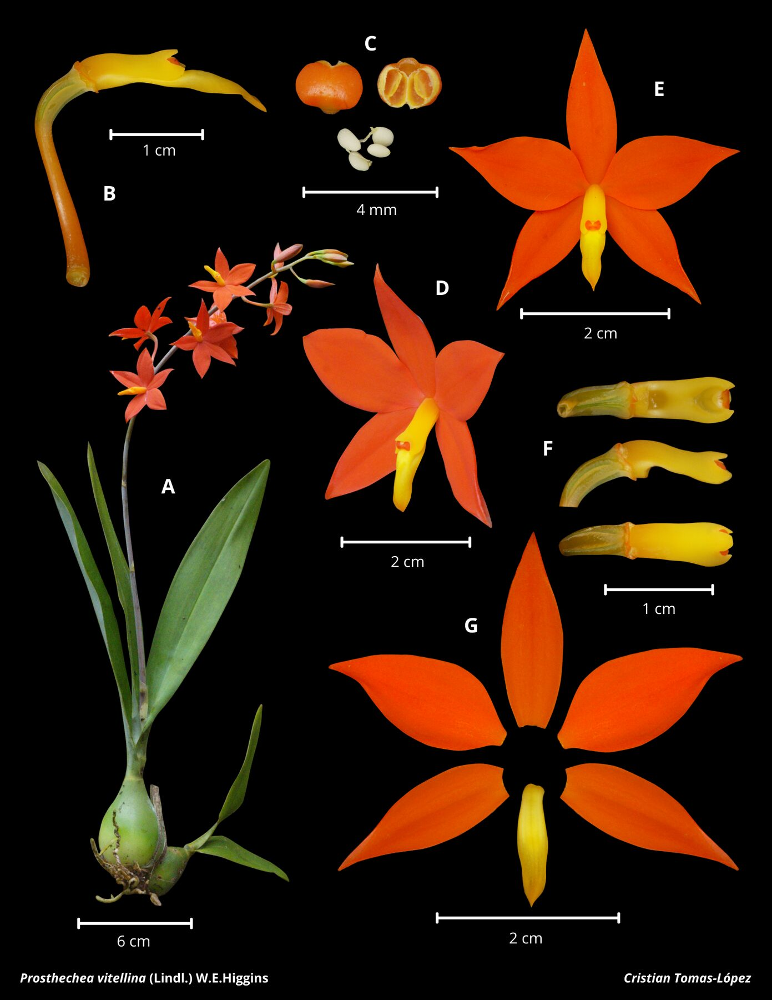

A protected cloud-forest epiphyte recorded at the Orchidarc Reserve; locally abundant in some mature forest fragments but formally listed under Mexico's NOM-059.


The vermilion-orange flowers of Prosthechea vitellina make it one of the most recognisable cloud-forest orchids in Mexico and Central America. Its local abundance at the Orchidarc Reserve should not be confused with security across its range: the species remains dependent on humid montane forest and mature host trees.
Within our reserve, P. vitellina is one of the most abundant epiphytic orchids. The population is centred on high-canopy oaks in riparian primary forest fragments, where humidity remains high through the dry season.
The local abundance illustrates a broader principle: even small, well-managed forest fragments can sustain dense populations of species that are legally protected or declining elsewhere. Protecting these fragments — and preventing the loss of the large host trees the orchids depend on — is among the highest-leverage actions we take.
We track flowering individuals annually, document seed-set in a subset of the population, and use the reserve population as a source of provenance-matched seed for symbiotic propagation.